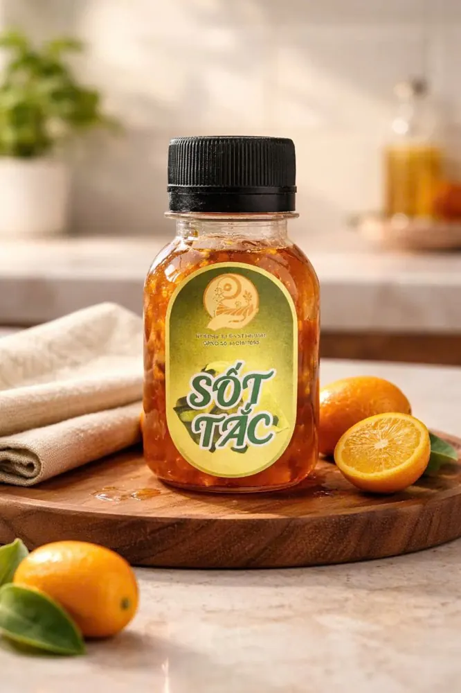
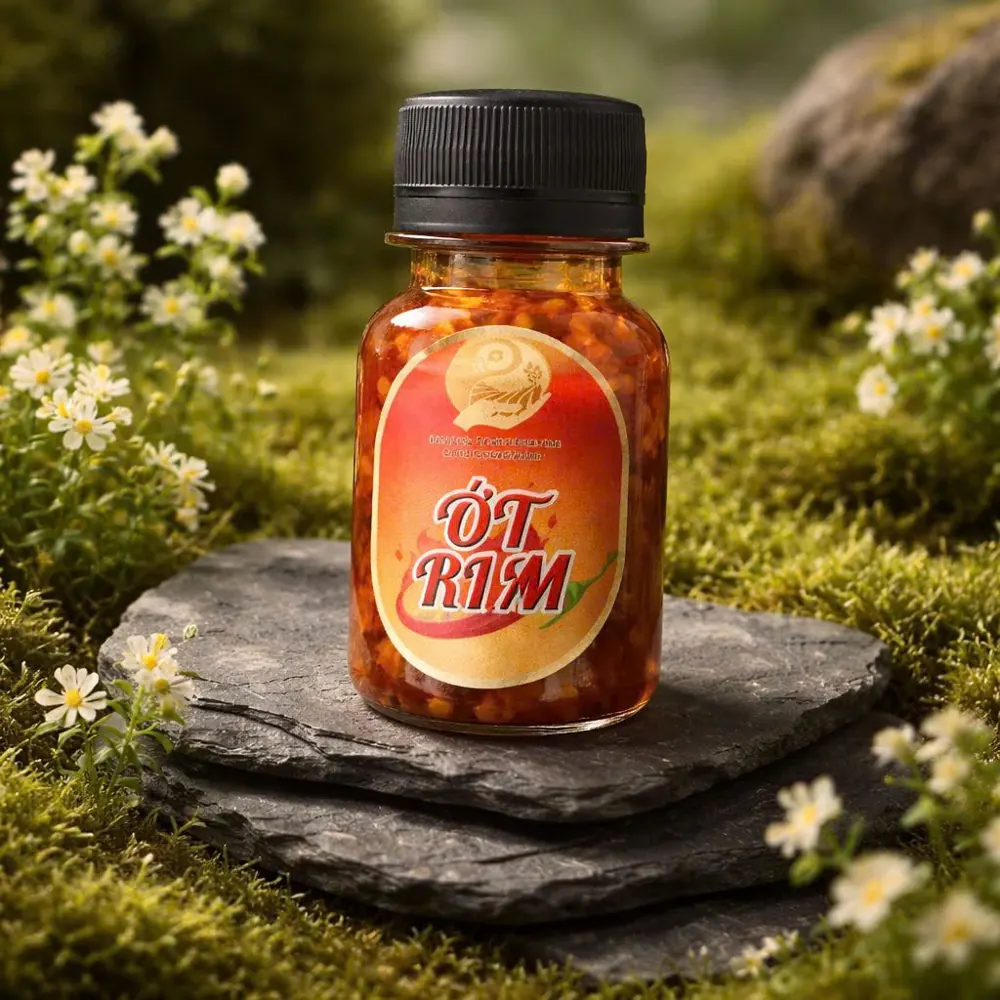
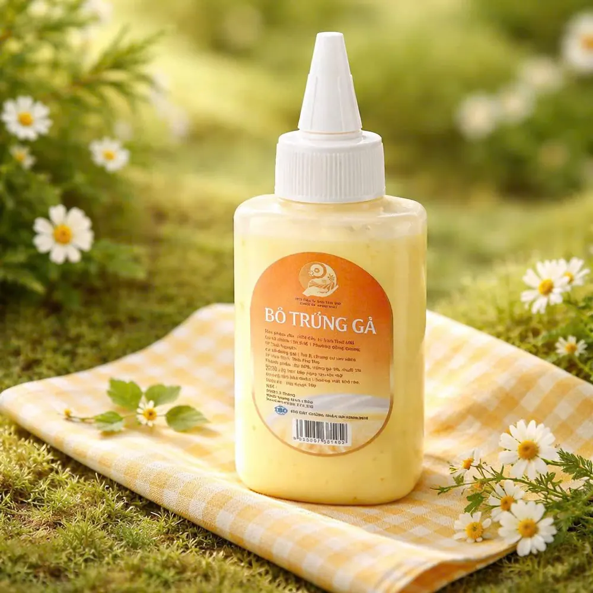
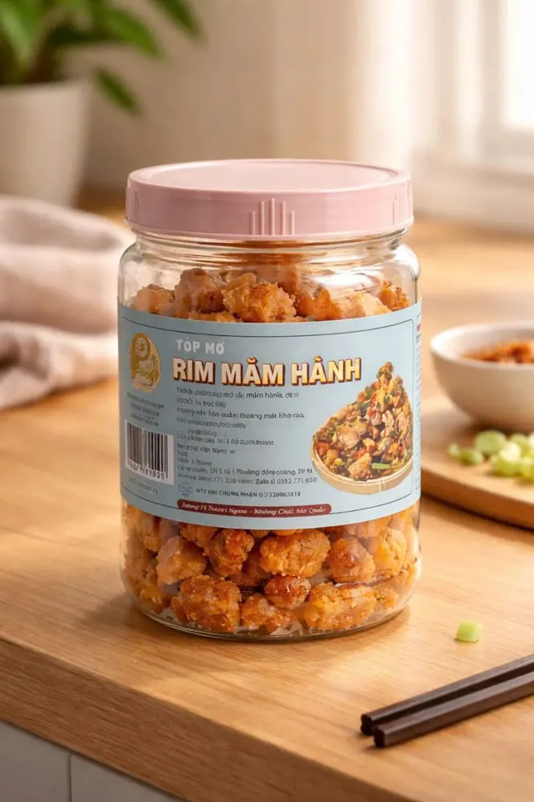

Sốt, topping & gia vị đóng lọ
Sốt và topping quyết định hương vị của bánh tráng trộn. Sinh Thái Việt đóng lọ sốt me, sốt tắc, sốt bò, sốt ớt, bơ vàng và nhiều loại topping.
Ngoài ra còn có muối tép hành phi, tóp mỡ, chà bông và rong biển tỏi đóng lọ, dùng ăn kèm hoặc làm quà.
15 sản phẩm trong nhóm


Hình ảnh sản phẩm





Câu hỏi thường gặp
Có bán sốt số lượng lớn không?
Có. Sốt có dạng lọ, chai 1 lít và can 5 lít trong mục Nguyên liệu sỉ.
Nhóm khác
Bánh tráng trộn, phơi sương & dẻo tômSet & combo ăn vặtCơm cháyKhô & mực ăn liềnBánh tráng hũ mix topping